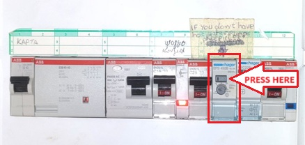

We are honored that you have selected our property for your holidays. We are committed to providing you with an enjoyable and comfortable stay.
For any comments or assistance, you can reach us at:
This is a guide that can help you during your stay! In the first part you can find some important info about the villa. Then can choose from the navigation bar the part of the guide that you want to visit.
Your comments and experiences are important to us and help improve our services. If you like you can review us on Google and follow us on Facebook and Instagram.
Reception services are available between 09:00 am to 14:00 pm.
We have provided you with one set of keys, a card and a controller. The controller is to open the main gate so you can enter our property. With the key, you can open the door of your villa, and you have to place the card at the point with the sign next to the door so you can have electricity.
Network: DILIRA VILLAS
When you connect, a pop-up page will appear.
You can find username and password behind the entrance door.
Check-out time is 11:00 AM. Late check-out is available upon request.
Every 3 days the sheets and the white towels are changed and the house is cleaned. You can leave the garbage outside of your villa’s door every morning and we will pick them up. Please don’t leave the garbage outside all night long as the cats will tear them open
The water in the villas is heated by solar panels. If water is not warm enough, you can switch on the boiler. You can find the fuses panel next to the main door (for villa Lida) or in the basement (for villa Diana & Rami) and press the button that says "for warm water press here" on the designated boiler fuse switch. Press on and wait for 20min aprox. The boiler switch closes automatically. If water temprature isn't high enough press again and wait.
Kitchen stoves are touch control, so you have to press at specific points to turn them on (video). Also you can press the lock sign to lock your stoves for children safety. If you have any difficulty, please ask for help at the reception.
Please do not let children unattended at the pool and do not jump or dive. We are not responsible for any consequences due to non-compliance with the rules. Please make a shower (there is an outdoor shower beside the pool) before you enter the pool, so you can wash off any sunscreen that you may have used.
If you need transport services, we collaborate with a reliable driver. Call Rami-Alex at +30 6949654865 to help you arrange any transfer during your stay.
There are several mini markets in the area. The first two on the list are accessible by foot. If you want to buy a lot of things it’s better to go to a big supermarket in Heraklion like Sklavenitis, so it is cheaper for you. Sklavenitis also does delivery via phone at +30 2810377800 or online via e-food platform (in the adress bar type "dilira" and then choose Panagias Fraskias 10).
If you want to order food, Oregano "The Grill Project" delivers to Dilira for a minimum order of 35 €. Find the menu on the table.
Tel:+30 2810 371 556
Café-Bars and Clubs you can find in the area and at Heraklion.
Enjoy authentic Cretan cuisine with a private chef, featuring fresh local ingredients and traditional flavors.
For bookings contact Rami
Sail from Heraklion to Dia Island on a modern and large sailing yacht and try water activities, such as SUP paddleboarding and snorkeling. Enjoy an authentic Mediterranean meal and unlimited drinks.
For bookings contact Rami
Explore the abandoned Ghost Village of Achlada, visit the Fodele Village, birthplace of El Greco, and discover Crete’s untouched backlands with stunning mountain and coastal views.
For bookings contact Rami
Call: +30 6936922801 or visit EuroDiving
Visit Kreta Surf or call +30 6942460990
Horse riding at Amoudara Beach
For bookings contact Rami
And many more to discover while walking into the city! Find more info here. Also check the free walking tour
Some gorges & walking trails that you can visit near the villa are:
Your feedback is very helpful! Tell us how we can improve this guide here.
If you enjoyed your stay, visit our website for future bookings www.dilira.gr